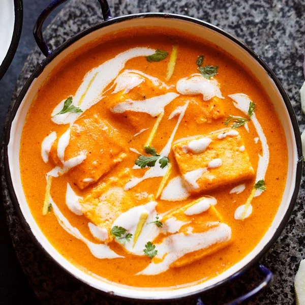

Paneer Butter Masala

Description
Paneer butter masala is a popular Indian dish made with soft paneer
cubes cooked in a rich, creamy tomato-based gravy with butter and spices.
It tastes delicious with naan, roti, or steamed rice. The gravy is
mildly spiced and has a smooth, creamy texture.
Ingredients
- 200 g paneer, cut into cubes
- 2 medium tomatoes
- 1 medium onion
- 1 tablespoon butter
- 2 tablespoons fresh cream
- 1 teaspoon ginger-garlic paste
- 1/2 teaspoon red chilli powder
- 1/2 teaspoon garam masala
- Salt to taste
- Water as needed
Steps
- Chop the onion and tomatoes.
- Heat butter in a pan and cook the onion until soft.
- Add ginger-garlic paste and cook briefly.
- Add tomatoes and spices, then cook until the tomatoes soften.
- Blend the mixture into a smooth gravy after it cools slightly.
- Return the gravy to the pan and add water if needed.
- Add paneer cubes and simmer for 5 minutes.
- Stir in fresh cream and serve hot.
Home